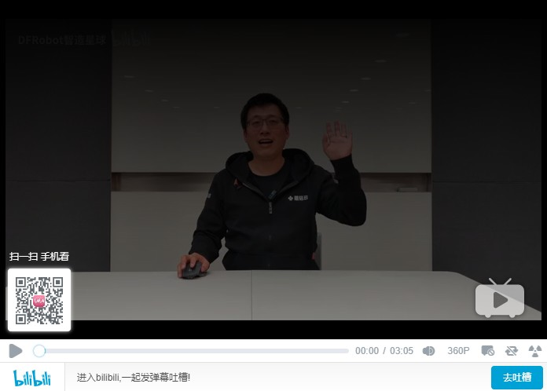

欢迎访问 pinpong python库教程文档!¶
pinpong库是一套控制开源硬件主控板的Python库，基于Firmata协议并兼容MicroPython语法，5分钟即可让你上手使用Python控制开源硬件。
借助于pinpong库，直接用Python代码就能给各种常见的开源硬件编程。其原理是给开源硬件烧录一个特定的固件，使开源硬件可以通过串口与电脑通讯，执行各种命令。
pinpong库的名称由“Pin”和“Pong”组成，“Pin”指引脚，“PinPong”为“乒乓球”的谐音，指信号的往复。
pinpong库的设计，是为了让开发者在开发过程中不用被繁杂的硬件型号束缚，而将重点转移到软件的实现。哪怕程序编写初期用Arduino开发，部署时改成了掌控板，只要修改一下硬件的参数就能正常运行，实现了“一次编写处处运行”。
Attention
当前PinPong库正在快速更新中，已支持Arduino系列uno、leonardo、mega2560,ESP32系列掌控板（handpy）以及micro:bit板，传感器支持50+，其他主控板及更多扩展库将逐步支持。
本文档推荐阅读流程：
查看安装教程进行准备
查看示例快速上手测试
查看教程进行系统学习
点击观看pinpong入门视频互动教程：https://www.bilibili.com/video/BV17K4y1T7MF
pinpong介绍
pinpong教程
pinpong类库
pinpong更新记录